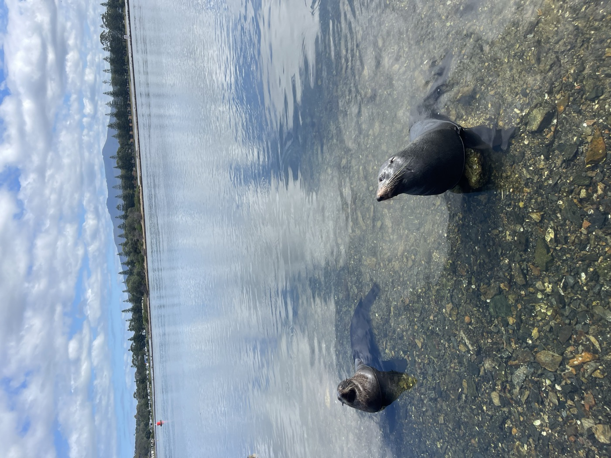

South Coast Escape
A full day down the NSW South Coast. You'll see wild kangaroos at Jervis Bay, stingrays at Bendalong and seals at Narooma, with a waterfront lunch in Batemans Bay.
- DurationFull day · 13 hrs
- Departs8:00 AM · Calderwood
- Returns9:00 PM · Calderwood
- Group size6–8 people
- Price
$500FREE
Promotional offer: this tour is currently free.
Enquire nowHow you'll travel
Itinerary
-
8:00 AM
Start from Calderwood
Meet us in Calderwood. Then hop in with us or follow in your own car as we head south along the coast.
-
9:15 AMto 9:45 AMMorning break
Bewong Rest Area
5 Laurina Pl, Bewong NSW 2540A short stop to stretch your legs, use the facilities and have a morning snack before Jervis Bay.
-
10:30 AMto 11:15 AMWildlife
Spot wild kangaroos at Cave Beach
Cave Beach, Jervis Bay Territory 2540Cave Beach is inside Booderee National Park. A park entry pass is required and is not included in the tour, so please buy your pass online before the day.
Eastern grey kangaroos graze around the Cave Beach camping area, often with joeys close by. A short walk takes you down to the beach, where a sea cave is cut into the sandstone cliffs.
-
12:15 PMto 12:45 PMWildlife
Spot stingrays at Boat Harbour Beach
Boat Harbour Beach, Bendalong NSW 2539The water here is calm and clear. Wade into the shallows and stingrays glide right past your feet.
-
2:00 PMto 3:00 PMLunch
Kohlis Waterfront Indian Restaurant
Batemans BayIndian food for lunch, overlooking the water at Batemans Bay.
-
4:15 PMto 5:00 PMWildlife
Watch seals at Australia Rock
Australia Rock, 1 Bar Rock Rd, Narooma NSW 2546Australia Rock has a hole worn through it in the shape of the Australian continent. Fur seals lounge on the breakwall rocks below. You can also often see seals and rays in the clear water around the Narooma wharf.
-
6:45 PMto 7:15 PMEvening coffee
McDonald's Ulladulla
UlladullaA coffee and comfort stop on the drive home.
-
9:00 PM
Back in Calderwood
We arrive back in Calderwood after a long, full day on the South Coast.
Included
- Guided tour of every stop on the itinerary
Not included
- Booderee National Park entry fee. Please buy your park pass before you travel.